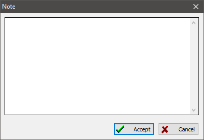

Notes are used to add small text to various database records. A note can contain a fragment of a source text, scratches, and drafts added to persons, families or multimedia content, research notes, sketches about location history, and so on.
Please do not take a note object as some kind of large formatted document. Those should be added to the database as multimedia content. There are no limits applied to the number of references made to a note from other objects.

There is a table on the "Notes" tab of the main working window, where you can find all notes stored in the database. Each note record has a summary area to the right of the table, where you can find a list of notes that refer to the selected one.